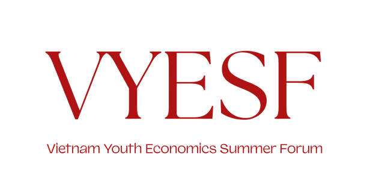

About Us
Vietnam Youth Economics Summer Forum (VYESF) is a dynamic academic initiative designed to bring high school students into the heart of real-world economic debate. Through a structured, forum-style format, VYESF encourages participants to critically engage with pressing financial and policy issues from both domestic and global perspectives.
At VYESF, students take on the roles of policymakers, industry representatives, economists, and stakeholders as they navigate challenging scenarios and simulate decision-making processes. Guided by professional moderators, participants collaborate, question, and present policy recommendations — all within a high-level discussion environment inspired by models like the World Economic Forum or Model United Nations.
With curated topics ranging from trade wars and corporate taxation to the future of cryptocurrency, VYESF gives students a platform to express their views, build teamwork, and sharpen their research and public speaking skills.
Demographic
Students in Hanoi (Grades 9-12)
Interested or experienced in economics and finance
Enjoys engaging in forum-style discussions and debates
2025 Theme
The New Era (Kỷ Nguyên Vươn Mình)
As Vietnam enters a period of rapid transformation, its economy is reshaping itself through digital innovation, shifting global partnerships, and a rising wave of youth-driven ambition. Under the theme “The New Era – Kỷ Nguyên Vươn Mình,” this year’s forum invites students to explore how our nation and its young generation are adapting, evolving, and stepping forward on the global stage.
Participants will examine current economic developments through a forward-looking lens — from the growth of digital finance and green policies to global trade realignment and inclusive development. The forum encourages students to critically engage with the question: What does it mean for Vietnam to rise — and what role will youth play in shaping that future?
Topics
Vietnam and the Tariff Age: Adapting to Global Protectionism and Shifting Trade Policies
Beyond Flat Tax: Vietnam's Push for Tax Transparency in Micro and Small Enterprises
The End of Cash? Vietnam's Path Toward Digital Currencies and Financial Transformation
Awards
#1
Distinguished Panelist
#2
Notable Panelist
#3
Promising Panelist
Winners of these awards will be offered an exclusive internship collaboration with VietnamFinance, a leading financial news outlet in Vietnam. As part of this opportunity, award winners will:
Work individually or in teams to research and write a financial or economic article
Be mentored by professional editors from VietnamFinance
Participate in virtual or in-person editorial sessions
Potentially have their article published on the official VietnamFinance website
This special internship program is scheduled to take place in the week immediately following the main forum event.
Registration
| Time | Deadline | Fee (Per Person) |
|---|---|---|
| Early Registration | July 20, 2025 | 100,000 VND |
| Late Registration | July 28, 2025 | 200,000 VND |